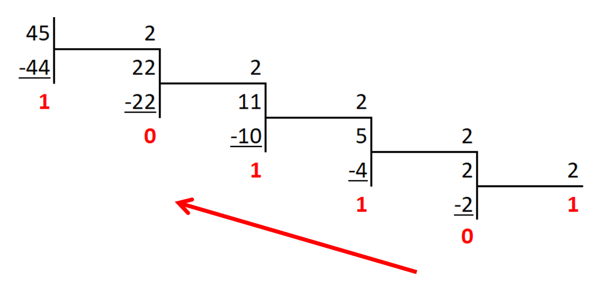
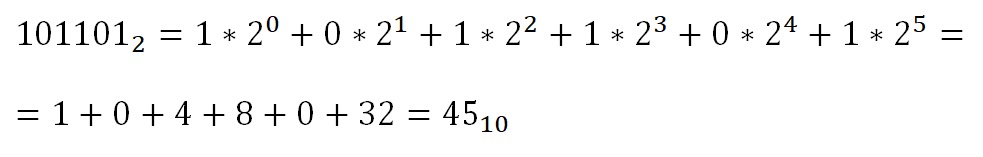

1.Разделить число на основание системы, в которую мы переводим число.
2.Выписать остаток от деления.
3.Если полученное частное больше или равно основанию системы, в которую переводится число, перейти шагу 1.
4.После получения частного меньше основания системы, выписать частное.
5.Записать по порядку все выписанные числа от последнего к первому.
6.Далее вышеописанные алгоритм будет проиллюстрирован наглядно.

Чтобы преобразовать число из любой системы счисления в десятичную нужно: каждый разряд числа умножить на Xn, где X - основание исходного числа, n - номер разряда. Затем суммировать полученные значения.